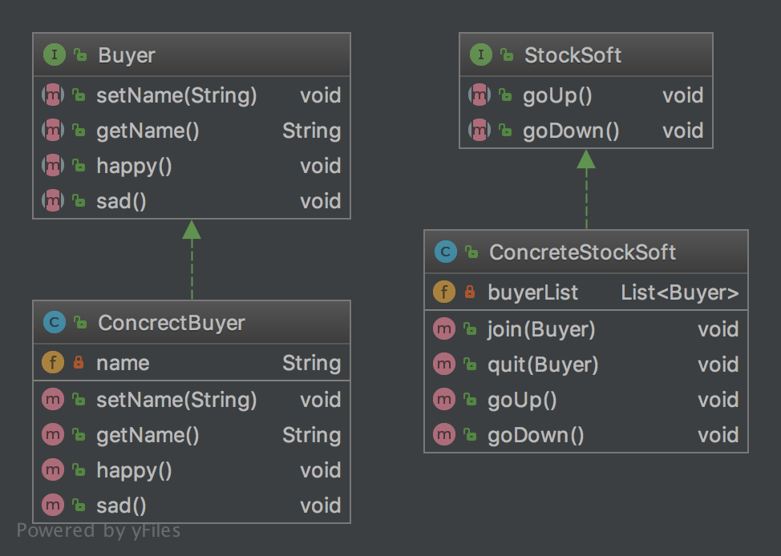
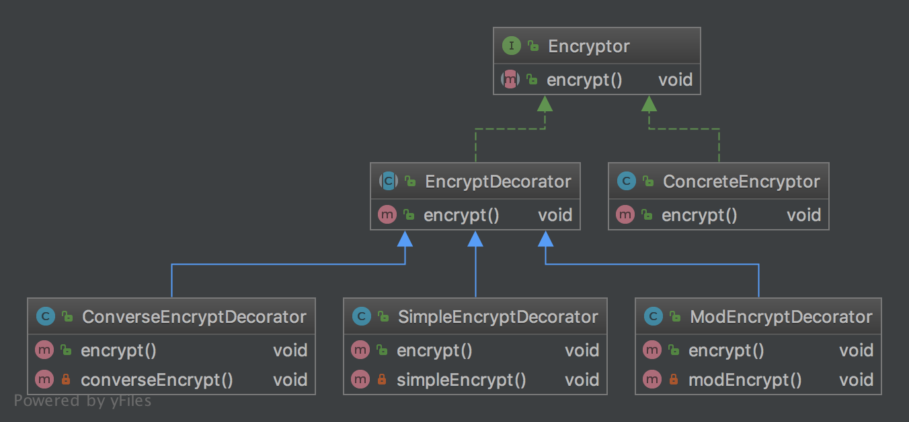
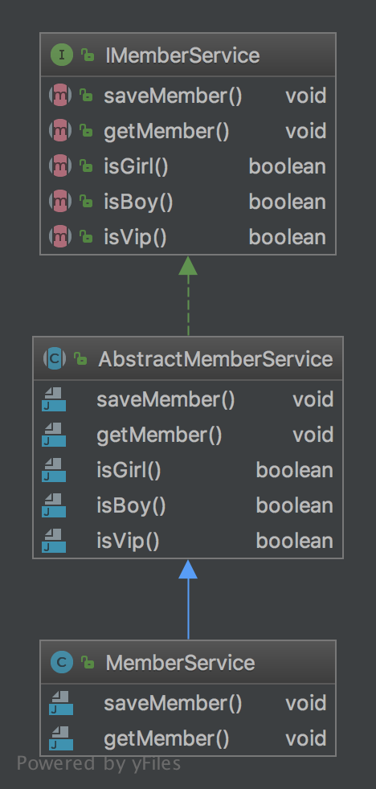

那些提高效率的命令行工具
Brew
Mac软件包管理工具。用命令行命令来安装软件，仓库软件丰富。地址
bat
bat? No，高端cat，不费眼。带颜色显示，支持git状态，自动分页。地址
cowsay
奶牛说： 地址
coreutils
使用Rust重写的gnuutils。地址
exa
ls、tree的替代者，支持多种显示方式，支持按指定条件排序显示。地址
duti
mac默认软件打开程序配置。再也不用一个手动的点击设置了，可以脚本化。地址
riggrep
强大的find，查询速度更快，支持匹配结果的字符替换，支持定义输出颜色。地址
fzf
强大的交互式搜索，大大提高效率。地址
goku
改键神器Karabiner的配置管理器，更健康，更人性化。地址
htop
交互式的top信息显示。地址
imgcat
命令行看图片。地址
jq
json内容操作显示。 地址
jenv
JDK版本管理命令行工具。地址
lnav
log file navigator，增加的日志查看，可以根据日志级别显示不到的日志信息。地址
lolcat
命令内容多彩输出。地址
m-cli
Mac的瑞士军刀，支持各种mac组件的操作。地址
mackup
Mac应用配置同步，支持多种存储方式。地址
mas
命令行安装apple store应用。地址
mycli
命令行中的mysql客户端。地址
ncdu
增强版本的du，机器空间使用查询。地址
nnn
命令行下的文件管理。地址
pandoc
文档转换，支持非常多的的格式转换。地址
pyenv
pythne版本管理工具。地址
pyenv-virtualenv
pythne虚拟环境管理，管理pyenv配置的环境。地址
prettyping
增强的ping，显示的更友好。地址
rtv
命令行中浏览reddit。地址
s-search
命令行下进行web搜索。地址
tmux
终端多会话管理器。地址
tldr
命令快速查询。简单的man。地址
w3m
终端浏览器，操作方便。地址
wrk
系统性能测试工具。地址
youtube-dl
youtube视频下载，也支持其它网站的视频下载。地址
diffoscope
文件，文件夹内容比较。地址
speedtest
cli 网络测速。地址
modd
文件变更监听响应，在文件变化时执行相应的配置动作。地址
那些提高效率的Alfred Workflow
Alfred Browser Toolbox
Toolbox是一个文件操作浏览的工具，它支持创建、查找文件的功能，还可以查询pdf文件，非常方便。Mac上的Finder使用确定不方便。这里有具体的使用方式。
Alfred Keywords Help
安装的workflow多了，记忆触发的keyword就比较困难，使用Keywords help这个插件可以显示出所有已经安装的workflow的触发key，还可以根据workflow进行查询。
Alfred Maestro
操作Maestro的workflow，可以直接查找macro并执行。插件地址
Awesome lists
快速查询Github上awesome列表的workflow，只为发现更多。插件地址，这个也是Nikita的作品。
Baidu Map
在alfred上使用百度地图。插件地址
Birthday
在alfred中显示你来到这个世界多长时间，让你珍惜每一分，每一秒。插件地址
Calendar
在alfred中显示出当月的日历信息。插件地址
Chromes Bookmarks
在aflred中搜索Chrome浏览器的书签，非常的好用。插件地址
Common Search
国内常用网站的搜索，现在支持知乎、淘宝、掘金、github。插件地址
Dash
在alfred中进行Dash的搜索，开发者必备。插件地址
Emacs Workflow
在alfred中进行emacs的操作，比如打开文件等。插件地址
Google Chrome History
在alfred中快速查看Chrome的浏览历史。插件地址
Hammerspoon Workflow
在alfred中调用hammerspon脚本的workflow。插件地址
Homebrew & Cask for Alfred
在alfred中进行mac软件的更新、查看、安装等。插件地址
iTerm Sessions
在alfre中快速切换iterm中存在的session窗口。插件地址
Kill Process
在alfred中kill进程，有时候程序假死，使用这个很方便，不用再在苹果的菜单栏中点击好几下来操作了。插件地址
Learn Anything
Nivita的Learn Anything，只为学习更多。插件地址
Linux Command
Linux命令手册，快速查询linux命令。插件地址
Mail.app Search
快速搜索Mail.app中的邮件信息。可以根据邮件名，发送人，主题等进行搜索。插件地址
NSC
各种进制的转换，支持二进制、十进制、十六进制之间的快速转换。插件地址
org-mode-capture
快速插入Org capture，可以快速的记录TODO事件。插件地址
Packal Search
Alfred workflow的快速搜索、更新。插件地址
Recent Documents / Apps
显示当前的文档信息，当前的app信息，当前app关联的文档信息。插件地址
Search Safari and Chrome Tabs
搜索Chrome和Safari当前打开的tab页面，支持跳转到选择页面。插件地址
Searchio!
支持google、youtuebe、wiki的fuzzy搜索，支持配置多种语言。插件地址
StackOverflow
搜索stackoverflow上的指定问题。插件地址(deanishe)
Swift Window Switcher
使用alfred来快速切换应用的窗口，还可以对safari的当前标签进行搜索。插件地址
SwitchHosts!
在alfred中快速本地host的配置，配合SwitchHosts来使用。插件地址
Tldr
Tldr的alfred版本，快速查询命令。插件地址
Uninstall with CleanMyMac X
使用CleanMyMac来快速卸载软件。插件地址
VagrantUP
控制vagrant的workflow，可以显示vagrant的环境，根据name，path进行过滤等。插件地址
VMWare Control
在alfred中控制vmware虚拟机。支持启动、停止、挂起、切换等操作。插件地址
Web Searches
通用的web搜索，支持reddit，google translate等网站搜索。插件地址
WeChat Plugin
在alfred中进行微信聊天，可以显示聊天记录，超级方便。插件地址
Wi-Fi
控制Mac的ip开关，新更新的版本增加了重启wifi的功能。插件地址
Youdao Translate
有道词典快速查询翻译，支持中英互译，发音，记录查询历史等功能。插件地址
Zapier for Alfred
在alfred中触发zapier流，目前还在尝试中。插件地址
那些提高效率的Idea插件
.ignore
CamelCase
codehelper
Dash
Duplicate Lines
Goto Stackoverflow
在idea中选中文本在右键中进行基于stackoverflow网站的google搜索。https://github.com/gejun123456/IntellijGoToStackOverFlow
Show as
在调试时,显示一个"show as"的菜单显示变量值的格式化信息。https://plugins.jetbrains.com/plugin/7010-show-as--
设计模式学习之代理模式
说明
代理模式是设计模式中使用频率非常的高的模式，像日常生活中的房产中介、外卖平台都属于代理。代理模式就是在访问真正的业务之时不会直接与真正的业务进行调用，而是与一个与真正业务对象有着相同功能声明的代理来进行处理，但是最终的处理还是由真正的业务类来进行（决定），比如房产中介，他们会帮助找房者根据条件来对可选房屋进行筛选，但是最终订与不订的权利还是由找房者来决定。常见的代理有保护代理、虚拟代理、远程代理。
代理模式
我们常用的后台系统一般会根据用户权限的不同对用户展示不同的业务菜单，拥有高权限的人会展示相对多的菜单进行操作，在这个过程中还要记录用户的操作日志，用户点了什么，执行了什么操作都需要进行记录，达到有据可查。在这个业务场景下，就可以使用代理模式进行实现。代理对象会持有一个真正业务对象的实例，在代理对象中还引用日志服务与权限服务，所有的请求都经过这个代理类来进行，这样就可以根据操作的用户的状态来进行相应的处理了。具体的代码实现如下：
- 定义一个查询接口，在这里定义一个查询用户收的方法，如下:
package cn.imcompany.proxy;
/**
* Created by tomyli on 2018/6/28.
* Github: https://github.com/peng051410
*/
public interface Search {
void queryIncome(String username);
}
- 再定义一个实现该接口的具体业务类：
package cn.imcompany.proxy;
/**
* Created by tomyli on 2018/6/28.
* Github: https://github.com/peng051410
*/
public class SearchService implements Search {
@Override
public void queryIncome(String username) {
System.out.println(username + "开始查询");
try {
Thread.sleep(1000);
} catch (InterruptedException e) {
e.printStackTrace();
}
System.out.println(username + "查询完成");
}
}
在上面代码中就实现了查询收入的方法，简单的打印了两行日志。
- 由于在实现需要对权限进行控制并记录日志，则先把需要用来的权限类与日志类进行定义与实现。实现代码如下:
package cn.imcompany.proxy;
/**
* Created by tomyli on 2018/6/28.
* Github: https://github.com/peng051410
*/
public class Auth {
public boolean valid(String username) {
return "admin".equals(username);
}
}
public class Logger {
public void beforeLog(String username) {
System.out.println("开始记录" + username + "查询日志");
}
public void afterLog(String username) {
System.out.println("结束记录" + username + "查询日志");
}
}
- 最后来进行代理类的实现，代理类通常也会实现查询接口，这样在调用者看来它与真正的业务类没有什么区别，实现代码如下：
package cn.imcompany.proxy;
/**
* Created by tomyli on 2018/6/28.
* Github: https://github.com/peng051410
*/
public class SearchProxy implements Search {
private Logger logger = new Logger();
private Auth auth = new Auth();
private Search search = new SearchService();
@Override
public void queryIncome(String username) {
logger.beforeLog(username);
if (auth.valid(username)) {
search.queryIncome(username);
}
logger.afterLog(username);
}
}
在上面的代理中，它维护了权限与日志这两个工具类的实例，还维护真正提供查询的业务类实例，在实现的查询收入接口中，先进行进入日志的记录，再验证用户的权限，验证通过则调用真正的业务类来查询收入，最后记录结束的日志，一次调用处理完成。
上面实现的类图如下：
 主要的核心都在代理类中，它对整个的流程进行全面的控制，对真正的业务方法进行了保护，只有满足条件的请求才可以被处理。
主要的核心都在代理类中，它对整个的流程进行全面的控制，对真正的业务方法进行了保护，只有满足条件的请求才可以被处理。
设计模式学习之委托模式
说明
委托模式不属于23种设计模式中，但是它在Spring框架中使用的很频繁，Spring的作用在Java的开发是非常大，所以需要学习一下委托模式。委托模式是指两个对象都有相同的方法与功能，比如A、B两个对象都有相同的方法，但是有调用A的method方法，A不会自己来处理而是直接调用了B的同名方法，由两个对象参与同一个请求，接受请求的对象将委托给另一个对象来处理。
委托模式
在一般的公司中，都会分为老板、项目经理、开发人员结构，老板负责制定决策，分配给项目经理后，他不会自己来完成，而是把需要的功能进行分解，交给擅长的开发人员进行实现。虽然项目经理也可以完成，但是是他把这些事情委托给了多个开发人员来做，加快了完成任务的速度。就以这个需求来说，使用委托模式来进行实现:
定义抽象的人类接口：
package cn.imcompany.delegate;
/**
* Created by tomyli on 2018/6/27.
* Github: https://github.com/peng051410
*/
public interface Member {
void showName();
void showSkill();
void doWork();
}
上面代码中定义了抽象的人类接口，显示这个人的名字，拥有的技能，工作的状态情况，接下来实现需求中的每个人。
定义老板(BOSS):
package cn.imcompany.delegate;
/**
* Created by tomyli on 2018/6/27.
* Github: https://github.com/peng051410
*/
public class Boss implements Member {
@Override
public void showName() {
System.out.println("i am boss");
}
@Override
public void showSkill() {
System.out.println("send commend");
}
@Override
public void doWork() {
}
}
定义项目经理和员工:
package cn.imcompany.delegate;
/**
* Created by tomyli on 2018/6/27.
* Github: https://github.com/peng051410
*/
public class Leader implements Member {
private Member developerA;
private Member developerB;
public void setDeveloperA(Member developerA) {
this.developerA = developerA;
}
public void setDeveloperB(Member developerB) {
this.developerB = developerB;
}
@Override
public void showName() {
System.out.println("i am leader");
}
@Override
public void showSkill() {
showName();
System.out.println("i want to select member to doWork");
}
public void doWork(){
showSkill();
developerA.doWork();
developerB.doWork();
}
}
public class DeveloperA implements Member {
@Override
public void showName() {
System.out.println("i am developer a");
}
@Override
public void showSkill() {
showName();
System.out.println("i can do login function");
}
public void doWork() {
showSkill();
System.out.println("start work login");
}
}
public class DeveloperB implements Member {
@Override
public void showName() {
System.out.println("i am developer b");
}
@Override
public void showSkill() {
showName();
System.out.println("i can do pay function");
}
public void doWork() {
showSkill();
System.out.println("start do pay");
}
}
在上面代码中，定义一个项目经理与两个开发，在项目经理中维护(管理)着对两个开发的引用。这样在项目经理的doWork中其实是调用开发者A与开发者B的doWork来都完成工作。接下来测试一下：
package cn.imcompany.delegate;
/**
* Created by tomyli on 2018/6/27.
* Github: https://github.com/peng051410
*/
public class WorkTest {
public static void main(String[] args) {
Boss boss = new Boss();
boss.showName();
boss.showSkill();
Leader leader = new Leader();
Member memberA = new DeveloperA();
Member memberB = new DeveloperB();
leader.setDeveloperA(memberA);
leader.setDeveloperB(memberB);
leader.doWork();
}
}
BOSS下发了一个工作，由项目经理选择要真正来工作的人，最后调用了项目经理的doWork方法来实现需求，其实是DeveloperA与DeveloperB在真正的工作，对于BOSS而言，他不在乎谁在工作，他只要结果，结果导向嘛。。。苦了我们这帮程序员。
整体的类图结构:

设计模式学习之观察者
说明
观察者模式在日常开发中使用频率也是非常高的，它建立了对象与对象之间的关系，一个对象的行为改变会通知到另一个对象，被通知的对象根据通知做出相应的处理动作。在观察者中分为目标对象（被观察者）、观察者。观察者模式是一种对象行为模式。
观察者模式
现在很多人都购买股票，在市面上有很多的股票软件供广大股民使用。股票软件一般会在用户关注的股票有变动时发送消息来通知股民。在这里，某一支股票就是目标对象，广大股民与股票软件就是观察者，他们根据股票的行情变化来做出相应买入或者卖出操作。这一需求可以使用观察者模式进行实现。代码如下：
先来定义一个抽象的购买股票的股民们，他们有喜有悲的心情:
package cn.imcompany.observer.stock;
/**
* Created by tomyli on 2018/6/23.
* Github: https://github.com/peng051410
*/
public interface Buyer {
void setName(String name);
String getName();
void happy();
void sad();
}
再来定义具体的股民行为实现类：
package cn.imcompany.observer.stock;
/**
* Created by tomyli on 2018/6/23.
* Github: https://github.com/peng051410
*/
public class ConcrectBuyer implements Buyer {
private String name;
@Override
public void setName(String name) {
this.name = name;
}
@Override
public String getName() {
return name;
}
@Override
public void happy() {
System.out.println(this.getName() + ":happy");
}
@Override
public void sad() {
System.out.println(this.getName() + ":sad");
}
}
具体的股民实现了喜与悲的方法，这样观察者已经准备就绪。下面来定义股票软件：
package cn.imcompany.observer.stock;
/**
* Created by tomyli on 2018/6/23.
* Github: https://github.com/peng051410
*/
public interface StockSoft {
void goUp();
void goDown();
}
上面定义了一个抽象的股票软件，它有两个方法，一个股票上涨，一个是股票下跌。接下来实现具体的股票软件
package cn.imcompany.observer.stock;
import java.util.ArrayList;
import java.util.List;
/**
* Created by tomyli on 2018/6/23.
* Github: https://github.com/peng051410
*/
public class ConcreteStockSoft implements StockSoft {
private List<Buyer> buyerList;
public ConcreteStockSoft() {
this.buyerList = new ArrayList<>();
}
public void join(Buyer buyer) {
buyerList.add(buyer);
}
public void quit(Buyer buyer) {
buyerList.remove(buyer);
}
@Override
public void goUp() {
buyerList.forEach(Buyer::happy);
}
@Override
public void goDown() {
buyerList.forEach(Buyer::sad);
}
}
这是一个具体的股票软件，它持有一个购买指定股票的股民列表，还有股民加入与退出的方法，实现了股票上涨时的方法，在上涨时会通知股民，调用股民的happy方法，在股票下跌时调用股民的sad方法。接着做一下测试:
package cn.imcompany.observer.stock;
/**
* Created by tomyli on 2018/6/23.
* Github: https://github.com/peng051410
*/
public class StockTest {
public static void main(String[] args) {
ConcreteStockSoft niuStock = new ConcreteStockSoft();
ConcrectBuyer buyer1, buyer2, buyer3;
buyer1 = new ConcrectBuyer();
buyer1.setName("buyer1");
buyer2 = new ConcrectBuyer();
buyer2.setName("buyer2");
buyer3 = new ConcrectBuyer();
buyer3.setName("buyer3");
niuStock.join(buyer1);
niuStock.join(buyer2);
niuStock.join(buyer3);
niuStock.goUp();
niuStock.quit(buyer1);
niuStock.goDown();
}
}
在测试类中定义了三位购买股票的股民，股票软件把他们加入到维护的股民列表中，这时股票软件发现股票涨了，就调用goUp方法通知了列表中购买股票的股民们。接着股民1选择了卖出股票，则他在软件的维护列表中被移除，这时股票软件发现股票跌了，此时再一次通知持有股票的股民们，这时股民1已经收不到任何的通知，因为他已经不股票软件的通知列表中，此时只股民2与股民3在那悲伤中…
实现的观察者模式的类图：  表面上看股票软件与股民没有任何关系，但是在具体股票软件中维护了股民的列表(buyList)，这样可以在软件发现有变化时调用股民的方法来进行通知。
设计模式学习之装饰器
说明
装饰器设计模式是使用比较频繁的设计模式，它在不改变原物体的情况对原物体实现了功能的增加，原物体还是一个可单独使用的个体。在JAVA的类库中应该会马上想到IO类，各种的InputStrem，OutputStrem。
装饰器模式
在用户登录的中过程，我们需要对用户输入的密码进行加密操作，在设计时会提供好多种加密的算法，例如简单的BASE64加密，复杂的如MD5、DSA加密。直接把用户的密码存入数据库是真的在耍流氓。在使用这些算法时，我们想灵活的使用，比如使用完简单加密还可以再进行一下MD5的加密。针对这样的需求，可以使用装饰器模式进行实现。大体思路如下：
- 加密接口，定义加密方法。
- 在装饰器中，最原始的被装饰者是目标实现，它们一般会实现加密定义的具体方法。
- 装饰者会针对目标对象进行装饰，所以它要同样实现加密接口的方法，一般情况下这个装饰器会定义为抽象的形式，在这个装饰器父类中维护着对目标对象的引用。
- 具体装饰器继承抽象装饰器来实现对目标对象的真正装饰操作。
以上的情况在代码上体现为如下形式：
- 加密接口
package cn.imcompany.decorator.encrypt;
/**
* Created by tomyli on 2018/6/25.
* Github: https://github.com/peng051410
*/
public interface Encryptor {
void encrypt();
}
- 具体加密类，实现加密处理接口
package cn.imcompany.decorator.encrypt;
/**
* Created by tomyli on 2018/6/25.
* Github: https://github.com/peng051410
*/
public class ConcreteEncryptor implements Encryptor {
@Override
public void encrypt() {
System.out.println("base encrypt!");
}
}
- 抽象加密装饰器
package cn.imcompany.decorator.encrypt;
/**
* Created by tomyli on 2018/6/25.
* Github: https://github.com/peng051410
*/
public abstract class EncryptDecorator implements Encryptor {
private Encryptor encrypt;
public EncryptDecorator(Encryptor encrypt) {
this.encrypt = encrypt;
}
@Override
public void encrypt() {
encrypt.encrypt();
}
}
上面的抽象装饰器实现的加密接口，在这个类中维护加密接口的实体，加密方法直接调用其维护实体的加密方法。
- 具体的装饰器实现类
package cn.imcompany.decorator.encrypt;
/**
* Created by tomyli on 2018/6/25.
* Github: https://github.com/peng051410
*/
public class ModEncryptDecorator extends EncryptDecorator {
public ModEncryptDecorator(Encryptor encrypt) {
super(encrypt);
}
@Override
public void encrypt() {
super.encrypt();
modEncrypt();
}
public void modEncrypt() {
System.out.println("取模加密！");
}
}
package cn.imcompany.decorator.encrypt;
/**
* Created by tomyli on 2018/6/25.
* Github: https://github.com/peng051410
*/
public class ConverseEncryptDecorator extends EncryptDecorator {
public ConverseEncryptDecorator(Encryptor encrypt) {
super(encrypt);
}
@Override
public void encrypt() {
super.encrypt();
converseEncrypt();
}
public void converseEncrypt() {
System.out.println("逆向加密！");
}
}
上面的代码定义了两个具体的装饰器实体，在这两个装饰器类中，加密方法中都调用了父类的加密方法，然后调用了自己实现的加密方法，这样在先前加密的基础上又进行了一次加密。达到了双重加密的效果。让我们来进行一下测试:
package cn.imcompany.decorator.encrypt;
/**
* Created by tomyli on 2018/6/25.
* Github: https://github.com/peng051410
*/
public class EncryptDecoratorTest {
public static void main(String[] args) {
Encryptor encryptor = new ConcreteEncryptor();
//进行一次简单加密
Encryptor encryptDecorator = new SimpleEncryptDecorator(encryptor);
encryptDecorator.encrypt();
//对上一次加密进行二次加密（反转加密）
ConverseEncryptDecorator converseEncryptDecorator = new ConverseEncryptDecorator(encryptDecorator);
converseEncryptDecorator.encrypt();
}
}
在测试中先进行了一次简单的加密，又在第一次加密的基础上进行了二次加密，如果再想使用第三次加密，直接把二次加密的对象引用传入即可。这样可以形成很多种组合，可以满足很多加密的需求。 上面的加密类的类图如下： 
设计模式学习之适配器
说明
在前面的文章中介绍了一些关于支付相关的功能，现在转向登录，在早些时期的系统登录就是用户使用用户名与密码进行注册，注册成功后就可以进行登录了。随着时代的发展，出现很多三方的平台，它们对外提供了获取平台用户信息的功能，例如微信、qq、微博等三方登录，在接入这些三方登录时都是遵循相应的规则，老的登录的方式需要保留，对接新的登录方式还想要使用老的登录服务，这样可以使用适配器模式来实现。
适配器模式
比如我们平常使用的转接头一样，就是一种适配器的模式。它使两个不相关的物体很好的关联在一起。对于要接入的新的登录方式，首先定义新的三方登录的接口，定义要使用的三方登录方式，如下代码示例：
package cn.imcompany.adapter;
/**
* Created by tomyli on 2018/6/22.
* Github: https://github.com/peng051410
*/
public interface ThirdLogin {
void wechatLogin(String accessToken);
void qqLogin(String accessToken);
void sinaLogin(String accessToken);
}
如上定义了微信、qq、微博三种登录方式，它们都是使用accessToken来进行认证，经用户同意后获取相应的用户的信息调用方使用。下面来进行具体的实现：
package cn.imcompany.adapter;
/**
* Created by tomyli on 2018/6/22.
* Github: https://github.com/peng051410
*/
public class ThirdLoginAdapter implements ThirdLogin {
private LoginService loginService;
public ThirdLoginAdapter() {
this.loginService = new LoginService();
}
@Override
public void wechatLogin(String accessToken) {
System.out.println("微信获取用户信息");
loginService.login(accessToken, null);
}
@Override
public void qqLogin(String accessToken) {
System.out.println("qq获取用户信息");
loginService.login(accessToken, null);
}
@Override
public void sinaLogin(String accessToken) {
System.out.println("微博获取用户信息");
loginService.login(accessToken, null);
}
}
在上面的实现，并没有重新写登录的逻辑，除了要调用三方平台的代码，登录的功能是直接使用老的登录服务实现的。在这个实现类中引用了老的服务，然后使用其已经非常成熟的功能来完成登录的操作。这样以最少的代码达到了新的需求也使老的服务可以正常运行。免去了很多测试的功能点。这种适配器叫做对象适配器。
缺省适配器
上面的登录方法比较简单，如果要适配(实现一个接口)很多的业务方法，则对于实现方是一个困难，如果不想实现所有的方法可以定义一个抽象类来实现接口的大部分方法，再继承这个类选择需要实现覆盖的方法进行处理，这样就得到了一个缺省的适配的模式。对于用户状态一般有性别、是否是VIP等一些标识信息。下面定义了一个用户的基本标识类：
package cn.imcompany.adapter.def;
/**
* Created by tomyli on 2018/6/22.
* Github: https://github.com/peng051410
*/
public interface IMemberService {
void saveMember();
void getMember();
boolean isGirl();
boolean isBoy();
boolean isVip();
}
对于实现类来不想一下子都实现，因为有些标识可以是默认的，比加默认情况是用户都不是VIP用户，面向男士的应用则默认isBoy返回true。这样可以先定义一个抽象来进行一些基本的实现。
package cn.imcompany.adapter.def;
/**
* Created by tomyli on 2018/6/22.
* Github: https://github.com/peng051410
*/
public abstract class AbstractMemberService implements IMemberService {
public abstract void saveMember();
public abstract void getMember();
@Override
public boolean isGirl() {
return false;
}
@Override
public boolean isBoy() {
return true;
}
@Override
public boolean isVip() {
return false;
}
}
接下来真正类只需要继承这个抽象类来重写一些特定的方法就可以了
package cn.imcompany.adapter.def;
/**
* Created by tomyli on 2018/6/22.
* Github: https://github.com/peng051410
*/
public class MemberService extends AbstractMemberService {
@Override
public void saveMember() {
System.out.println("saveMember");
}
@Override
public void getMember() {
System.out.println("getMember");
}
}
在上面的代码中，MemberService只需要重写saveMember和getMember方法就可以了，其它的三个方法在父类中有了默认的设置，这减少了子类实现方法的数目。缺省适配器属于类适配器，缺省适配器的结构图如下：

设计模式学习之模板模式
说明
在一般实现处理用户支付订单时，通常都会在一个单独的回调项目中来处理用户的支付方式回调。一般情况下，回调的处理过程都是相似的，大体的步骤就是获取参数->验证参数->验证签名->验证支付状态（可选）->订单状态为成功增加用户的充值金额。具体的过程由于不同的支付方式不同而处理的不同。这种需求可以使用模板的模板模式来实现。
模板设计模式实现
模板模式就是由一个类来声明整个处理流程的步骤，具体的实现由各个实现类来进行实现。处理的流程不变，变是就是里面具体的实现。针对上面的支付回调，可以声明一个抽象类来声明具体的流程方法，代码如下：
package cn.imcompany.callback;
import java.util.Map;
/**
* Created by tomyli on 2018/6/21.
* Github: https://github.com/peng051410
*/
public abstract class PayCallback {
public abstract Map<String, String> getParam();
public abstract boolean checkParam(Map<String, String> param);
public abstract boolean validSign();
/**
* 定义了一个钩子方法来让子类控制流程实现
* @return true：强制返回，false：不强制返回
*/
public boolean forceReturn() {
return false;
}
public String doService() {
Map<String, String> map = getParam();
if (!checkParam(map)) {
return "param fail";
}
if (!validSign()) {
return "sign fail";
}
if (!map.get("status").equals("success")) {
if (forceReturn()) {
return "order fail";
}
}
return "success";
}
}
在上面的PayCallback类中声明了getParam(获取参数)，checkParam（验证参数），validSign（验证签名），验证支付状态四个步骤，具体的支付回调类要来实现这里声明的方法即可。下面是一个微信支付的回调类的代码实现：
package cn.imcompany.callback;
import java.util.HashMap;
import java.util.Map;
/**
* Created by tomyli on 2018/6/21.
* Github: https://github.com/peng051410
*/
public class WechatPayCallback extends PayCallback {
@Override
public Map<String, String> getParam() {
Map<String, String> map = new HashMap<>();
map.put("status", "fail");
return map;
}
@Override
public boolean checkParam(Map<String, String> param) {
return true;
}
@Override
public boolean validSign() {
return true;
}
@Override
public boolean forceReturn() {
return true;
}
}
具体的微信回调类实现了PayCallback类声明的抽象方法，它返回的状态是状态失败，在这里面有一个forceReturn方法，可以处理是否在某一个流程进行强制的返回，在微信回调类里面是进行强制返回，下面看一下支付宝的回调类代码：
package cn.imcompany.callback;
import java.util.HashMap;
import java.util.Map;
/**
* Created by tomyli on 2018/6/21.
* Github: https://github.com/peng051410
*/
public class AliPayCallback extends PayCallback {
@Override
public Map<String, String> getParam() {
Map<String, String> map = new HashMap<>();
map.put("status", "success");
return map;
}
@Override
public boolean checkParam(Map<String, String> param) {
return true;
}
@Override
public boolean validSign() {
return true;
}
}
对于支付宝，这里面的状态是成功，证明这一单处理成功，在支付宝回调这个类里面没有重写父类的forceReturn方法，这个方法子类可以根据需要来决定是否需要覆盖。这样父类给了子类可以控制父类流程的方法，这个方法一般叫做钩子方法，是留给子类来进行一些特殊处理的方法。子类实现这个方法就可以间接的控制父类中定义好的流程。比如在这里就可以控制遇到支付状态为失败的订单是否继续进行后续的操作。不进行了说明这一单也正确处理完成，返回给调用方正确的状态就可以了。

设计模式学习之策略模式
说明
策略模式是设计模式中使用频率很高的模式，主要的就是实现对行为的包装，达到结果的方式有多种，使用者可以选择任何一个方式来得到想要结果，在增加新的方式时更加的方便与灵活。它是为了适应算法的灵活性而产生的。
策略模式实现
以常用的购物为例，一般情况下购物分为浏览商品，下单，支付。在支付时消费者可以选择多种不同的支付方式，如支付宝、微信、京东支付、银联支付等。在支付中流程就可以使用到策略模式，网站为用户提供了这些支付方式可供选择，用户只需要选择自己喜欢的支付方式来进行充值就可以得到商品了。在一般情况下都会定义一个抽象类来定义支付的一些行为，如金额，商品简介等信息。实现的抽象类如以下定义：
package cn.imcompany.pay;
/**
* Created by tomyli on 2018/6/20.
* Github: https://github.com/peng051410
*/
public interface Payment {
boolean pay(String param);
}
这样就定义了支付方式的行为，剩下的就由不同的支付方式来进行实现，比如支付宝支付、微信支付，示例代码如下：
package cn.imcompany.pay;
/**
* Created by tomyli on 2018/6/20.
* Github: https://github.com/peng051410
*/
public class AliPay implements Payment {
@Override
public boolean pay(String param) {
System.out.println("AliPay");
return true;
}
}
public class WechatPay implements Payment {
@Override
public boolean pay(String param) {
System.out.println("WechatPay");
return true;
}
}
要是再增加一种支付方式则可以实现Payment接口进行实现就可以了，一般情况下会有一个维护支付方式的常量类，由它来维护可用的支付方式。这个常量类的简化代码如下：
package cn.imcompany.pay;
/**
* Created by tomyli on 2018/6/20.
* Github: https://github.com/peng051410
*/
public enum PayType {
ALI_PAY(new AliPay()),
WECHAT_PAY(new WechatPay()),
JD_PAY(new JdPay()),
UNICOME_PAY(new UnicomePay()),
;
private Payment payment;
PayType(Payment payment) {
this.payment = payment;
}
public Payment getPayment() {
return payment;
}
}
在常量类可以获取要支付的具体支付方式来进行支付。接下来进行一下测试：
package cn.imcompany.pay;
/**
* Created by tomyli on 2018/6/20.
* Github: https://github.com/peng051410
*/
public class PayTest {
public static void main(String[] args) {
PayType.ALI_PAY.getPayment().pay("123");
PayType.valueOf(PayType.WECHAT_PAY.toString()).getPayment().pay("325");
}
}
上面的测试会输出
AliPay
WechatPay
这样一个简单的策略模式就实现了。
策略模式的类图如下: